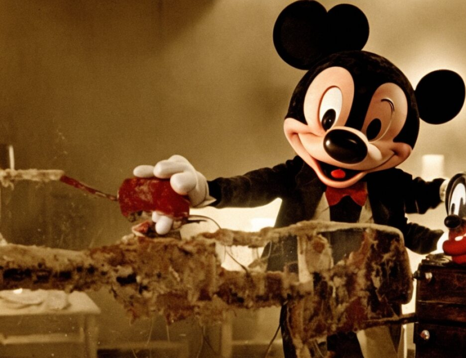

1 Q. Doctor, just to back up a little bit, let's start -- we'll
2 look at the image on the right of the screen, our right of the
3 screen. The very dark thick area on the bottom of that image,
4 is that the carotid artery?
5 A. That's the common carotid artery, right.
6 Q. Following that line up towards the top of the image on the
7 right hand of the, right-hand image, there appears to be a
8 part at the top of that image where it splits almost into a V
9 shape.
10 A. You are talking up here?
11 Q. They can't see what you are pointing to, but at the very
12 top of this image.
13 A. Correct.
14 Q. And is it your testimony that that in fact should be more
15 of a square?
16 A. Correct.
17 Q. Perpendicular?
18 A. Correct.
19 Q. And the fact that the artery that is now not perpendicular
20 but more towards a V, what does that indicate to you?
21 A. That means that there is mass effect of the temporal lobe.
22 Q. Would that be pressure pushing that artery up?
23 A. That's correct.
24 Q. And can you also tell anything about the blood flow
25 through these arteries?
8059
1 A. Yes. When you look at the serial, the sequence of the
2 whole angiogram where blood goes, the dye goes through the
3 arteries and then into smaller arteries and capillaries and
4 then small veins, et cetera, you can look at the time course
5 of that flow of blood, and in this case it was prolonged.
6 Q. Very slow?
7 A. Correct.
8 Q. And would there be a risk associated with that type of
9 flow of blood through these arteries?
10 A. Yes.
11 Q. And what would that be?
12 A. You get eschemia, decreased blood supply or even stoppage
13 of blood supply to areas of the brain, and it can cause
14 strokes.
15 Q. Doctor, after viewing the CAT scans for Mr. Pepe and the
16 angiograms, did you reach a decision about how to proceed
17 medically with this patient?
18 A. Yes.
19 Q. And what did you decide, and why?
20 A. To do surgery in an attempt to save his life.
21 Q. And what was the specific goal in doing the surgery?
22 A. To relieve the increased pressure in the brain by removing
23 the blood clot and taking out the penetrating object.
24 Q. Prior to beginning the actual operation, did you have an
25 opportunity to examine, look at this patient, Louis Pepe?
8060
1 A. Very briefly.
2 Q. Could you describe what you observed on his face?
3 A. He had a lot of blood covering his face. He had a
4 laceration of the left forehead and an object sticking out of
5 his left orbit.
6 Q. And let's focus on the laceration on his left forehead. A
7 cut; is that correct?
8 A. That's correct.
9 Q. Approximately how long was that cut?
10 A. Perhaps an inch or so.
11 Q. How deep?
12 A. It was down to the bone, skull.
13 Q. And could you indicate approximately where that was? And
14 I will describe it for the record.
15 A. (Witness indicating.)
16 Q. Above the left eye?
17 A. Correct.
18 Q. Could you tell us, then, how you proceeded when you
19 operated on Mr. Pepe?
20 A. Yes. What we did is make a scalp incision which started
21 in front of his left ear and then came back and forward like a
22 reverse question mark, incorporating the laceration in this
23 part of the, higher part of the incision. And then you
24 reflect the scalp and muscle, the temporalis muscle, which is
25 the thick muscle at the temple, and then drill a hole in the
8061
1 skull and use a special type of saw to remove a large window
2 of the skull to get access to the covering of the brain and
3 the brain.
4 Q. And that window that you describe is on the side of the
5 skull?
6 A. That's correct.
7 Q. And after you accomplished that, what was the procedure?
8 A. To open the dura, sort of like a parchment-paper-thick
9 layer that covers the brain, and then make an incision in the
10 brain initially to decompress the blood clot, to remove some
11 of the blood clot, and then you extend the incision to be able
12 to remove all the blood clot and expose and get control of the
13 penetrating object.
14 Q. This object, was it removed from the patient at that time?
15 A. Yes, eventually.
16 Q. And can you tell us the procedure you followed for doing
1